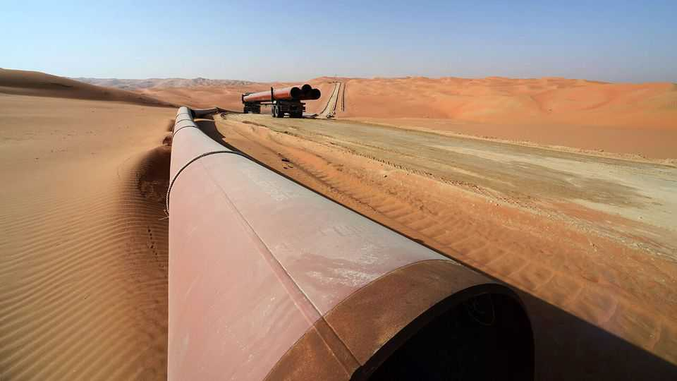
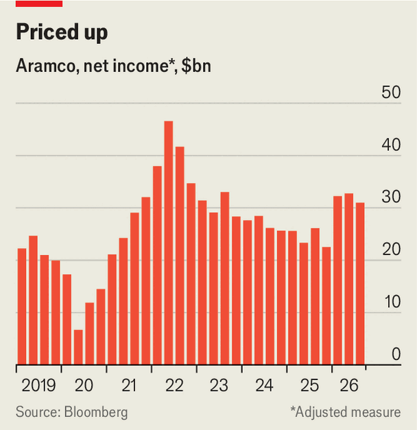

Besieged by war, Saudi Aramco continues to gush profits
Higher oil prices comfortably make up for bombed facilities

Nov 5th 2026
SAUDI ARAMCO has proved remarkably resilient this year. Since war broke out with Iran, the world’s biggest oil company has faced attacks on its facilities and disruption to the Strait of Hormuz, through which most of its barrels were shipped. Yet its cash gushers continue to flow. On November 3rd it reported an adjusted net profit for the quarter from July to September of $31bn, up by 9% from the previous year (see chart).
Aramco has been under fire before. In March 2022 Houthi rebels backed by Iran struck storage facilities in Jeddah, a year after an attack on a refinery in Riyadh. In 2019 they attacked the East-West pipeline, which carries Aramco’s oil to the Red Sea, along with two of the company’s processing facilities. This conflict has brought far more upheaval. But although production is down from pre-war levels, prices are up, and the business has been finding new ways to get its oil to market.

Aramco has been forced to continuously adapt over the past nine months. Soon after the conflict erupted in February the company began to transport more of its oil via the Red Sea, rather than the Persian Gulf. In July, when the Houthis blockaded the southern passage through the Bab al-Mandab Strait, it redirected its vessels north, to make greater use of the Suez-Mediterranean pipeline. Attacks on the East-West pipeline in September cut the volume of oil reaching the Red Sea, so Saudi Arabia has been sending tankers through the Strait of Hormuz to the Gulf of Oman, where they transfer oil to the vessels of customers unwilling to make the journey themselves. (The pipeline has recently been repaired, with flows to the Red Sea recovering.)
Last month Aramco pushed around 7m barrels of oil a day to the market, up from 4.5m in July and not far off the figure in February, before the war. Overseas storage facilities in places such as the Netherlands and South Korea have also proved useful.
Aramco’s ability to weather the conflict is helped by fat margins. Its upstream costs, at $11.50 a barrel last year, including operating and capital expenditures, are a small fraction of the $95 a barrel fetched in its most recent quarter. The cost of restoring damaged facilities has so far been modest, with capital expenditure in the first nine months of 2026 down by 4% from the year before.
But transport has become much more expensive. According to the International Energy Agency, an intergovernmental body, the cost of shipping oil from the Persian Gulf to Asia is more than five times what it was before the war, as inefficiencies have reduced the availability of tankers. Some are stuck for days performing ship-to-ship transfers in the Gulf of Oman. Those collecting barrels from the other end of the Suez-Mediterranean pipeline must then travel all the way around the Cape of Good Hope to supply customers in Asia. Aramco has had to bear some of the pain. It currently discounts the light crude it sells in Asia by about $5 a barrel, compared with the Dubai benchmark, up from $2 a barrel last month.
Besides expanding the East-West pipeline, Aramco intends to develop new export routes—which could become a costly endeavour and run up against the region’s volatile politics. One option under consideration is a pipeline from the oilfields in Saudi Arabia’s east to Duqm on the coast of Oman. Rystad Energy, a consultancy, estimates that it would stretch for around 1,000km and cost up to $7bn to build, equivalent to 14% of the company’s annual capex budget. An alternative is to restore the 1,500km Iraq-Saudi pipeline, which runs from Basra in Iraq to Yanbu, the Saudi port on the Red Sea. (The current pipeline was shut off during the first Gulf war in 1990, and has fallen into disrepair in the decades since.)
Amin Nasser, Aramco’s chief executive, has argued that investments in pipelines would quickly pay for themselves. That may well prove true if oil prices stay elevated and the Gulf’s other export routes remain unreliable. A resolution to the conflict with Iran may be hastened by Donald Trump’s defeat in the midterms. But during his earnings call Mr Nasser noted that global oil inventories are running low, and suggested that the need to replenish storage could result in elevated demand for two years after the war. For Aramco, then, the profits will keep flowing. ■